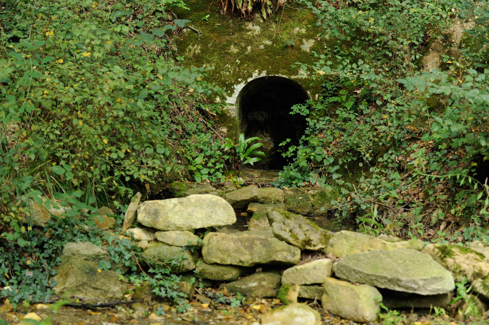
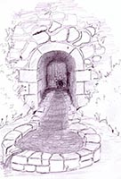
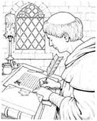
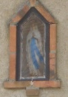

Chapter II
The Story
From 2004 we restored the house; in the evenings we dug into its past. It kept more history than we had any right to expect.
The font, and Morand
At the north-eastern corner of the property, hidden in its own shady grove, there is a spring - the font that gave Fontmorand half its name. For centuries it served as the household's washing place, and the circular, bowl-shaped stone structure is still clearly there under the leaves. We took visitors to see it more often than they probably wished.



The other half of the name, we believe, is Morand - a Benedictine saint, patron of wine growers, feast day the third of June. Morand was born to an aristocratic family near Worms and educated at its cathedral school, made a pilgrimage to Compostela, and entered the great monastery at Cluny. Sent into Alsace as counsellor to Count Frederick Pferz at Altkirch, he became famous for celebrating an entire Lent sustained by nothing but a bunch of grapes - which, in France, is exactly the sort of miracle that gets remembered.
The warThe niche in the South Barn
In the north wall of the South Barn there is a niche holding a small statue of the Virgin Mary - the Lady of Pontmain. It is not the original statue but a stand-in, placed there until the original is found. The niche was built after the Second World War to commemorate what happened quietly at Fontmorand during it: refugees were hidden in the South Barn on their way south to Spain, part of a secret route run by the Resistance at Prissac. The family who lived at Fontmorand in those years confirmed the story to us themselves.
The story has a coda we particularly loved: the organiser of the refugee route, who had come to Prissac from Alsace, fell for one of the household's daughters. They married, and a daughter of that marriage was still living and working in Châteauroux when we knew the house.

The day the column turned away
On 10 July 1944, the Waffen-SS "Das Reich" division swept these communes for the Resistance - Bélabre, Chalais, Oulches, Ciron, Prissac, Lignac. It was an act of terror without precedent for this quiet corner of the Berry: villages and hamlets burned, from Bélabre and Terrier to Château-Guillaume and Chillouet, and the wooded hills of la Bicherie, just north of Prissac, were searched.
Prissac itself was spared, for two reasons. One was the caution of its Resistance leadership. The other was the heroic silence of a boy of about fifteen named Henri Mégray - "Riri" - who was seized and forced into the lead vehicle of the German column as a guide. Stripped and beaten at the cemetery gate, he said nothing, though he spent his days alongside the men of the Resistance and knew exactly where they were. The column turned away towards Bélabre and Oulches - narrowly missing both Fontmorand and the Moulin Ribaud, headquarters of the local Resistance leader. Every family in Prissac, including ours decades later, owed that boy more than could be repaid.
Adapted from a 1972 "La Nouvelle République" article preserved in the family archive.
Odette AndrotRighteous Among the Nations
Odette Androt was the town-hall secretary of Prissac. During the Occupation, around twenty Jewish families took refuge in the area - among them three members of the Gozland family, born in Constantine and Marseillais by adoption, and four of the Siac family, who had fled Romania and then occupied Paris. Odette provided them all with identity and ration cards that did not carry the "Juif" stamp the law required.
In 1943 Prissac's mayor, a known Vichy loyalist, ordered her to draw up a list of the town's Jewish residents. Once he had signed it, she secretly destroyed it rather than pass it to the Ministry of the Interior. In the summer of 1944, with retreating German forces rumoured to be hunting Jews on their way north to Normandy, the Siacs - husband, wife, twelve-year-old Thérèse and six-year-old Lucien - could find no villager to take them in. Odette sheltered them in her own home until the danger had passed.
On 31 December 1998, Yad Vashem recognised Odette Androt as Righteous Among the Nations.
Our chapter2004 to 2018
We were only the latest family to pass through Fontmorand's long story, and we knew it. We spent our fourteen years restoring the house - roofs, beams, bathrooms, the endless pointing - and recording as much of its history as we could find, including everything on this page. When we sold it, we kept the photographs and the stories. This site is where they live now.